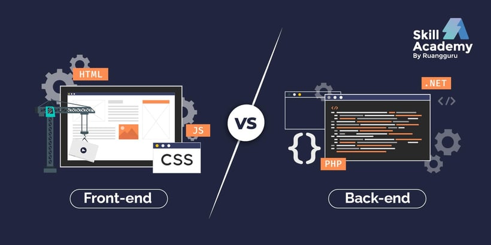

Mengenal Front End dan Back End Developer: Definisi, Tugas, Skill yang Dibutuhkan, Hingga Perbedaannya
Beberapa tahun terakhir, pekerjaan sebagai front end dan back end developer cukup banyak diminati. Hal ini tidak terlepas dari berkembangnya industri teknologi dan digital, yang mana salah satunya terkait dengan web developer. Bagi kamu yang berminat dengan pengembangan aplikasi atau situs web, mungkin pekerjaan ini cocok denganmu. Namun, tak jarang beberapa orang masih bingung mengenai perbedaan dua pekerjaan ini. Jadi apa itu front end atau back end? Dan apa saja perbedaannya? Berikut adalah penjelasan mengenai perbedaan antara front end dan back end developer.
Baca Selengkapnya →

Cara Menjadi Web Developer Untuk Pemula
Dalam beberapa tahun terakhir, web development menjadi salah satu skill yang paling banyak dicari di industri saar ini. Pernahkah terlintas di pikiranmu, bagaimana cara menjadi seorang Web Developer? Sebenarnya, kamu tidak perlu gelar sarjana dalam ilmu komputer untuk menjadi developer. Hanya saja, kamu harus bisa konsisten dan persisten karena belajar coding lebih dari sekadar menyusun kode dengan bahasa pemrograman. Jika kamu tertarik menjadi seorang Web Developer, mari kita mulai dengan dasar-dasarnya.
Baca Selengkapnya →

9 Skill Front End Developer
Di jaman serba modern seperti sekarang ini pengetahuan dan wawasan mengenai teknologi sangat penting untuk dipelajar. Khususnya buat kamu yang bercita-cita untuk berkarir di salah satu perusahaan digital atau yang sering disebut dengan startup company, dimana perusahaan seperti ini akan selalu berhubungan teknologi informasi.
Baca Selengkapnya →